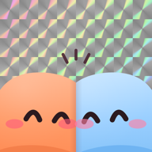

Safariでひらいてね
右下（または右上）の「…」から『Safariで開く』を選んでください
LINEの中のブラウザでは、アプリがひらけないことがあります

ふたもち
ふたもちの招待が届いています
招待リンクが正しくないようです。届いたメッセージのリンクを、もう一度タップしてみてね。
アプリでひらく App Storeで入手アプリを入れたあと、このページにもどって『アプリでひらく』を押してね

ふたもち
招待リンクが正しくないようです。届いたメッセージのリンクを、もう一度タップしてみてね。
アプリでひらく App Storeで入手アプリを入れたあと、このページにもどって『アプリでひらく』を押してね